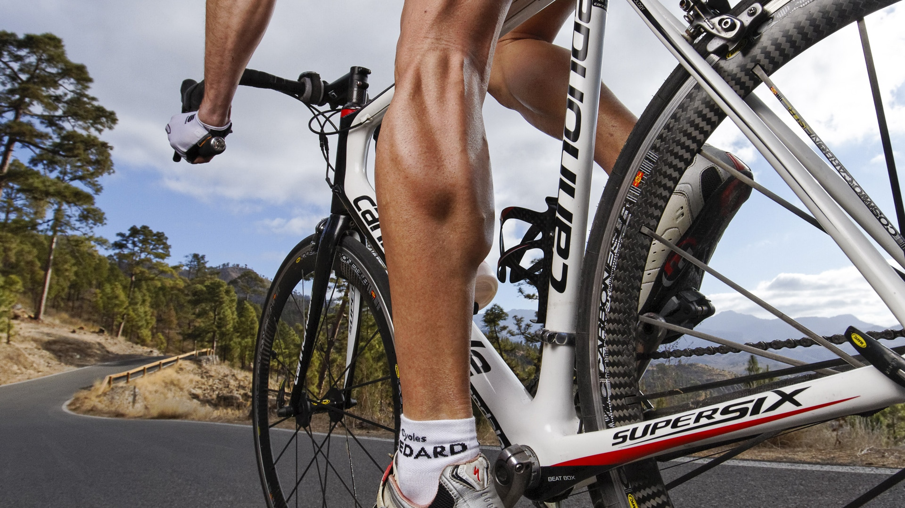
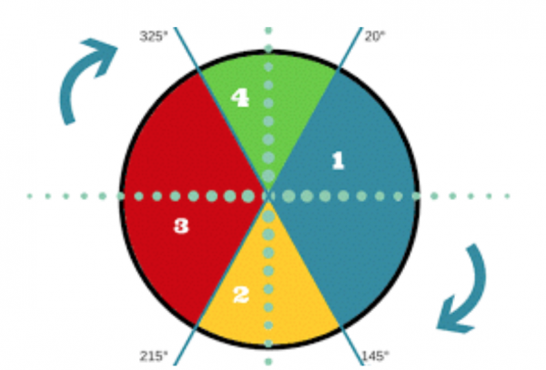
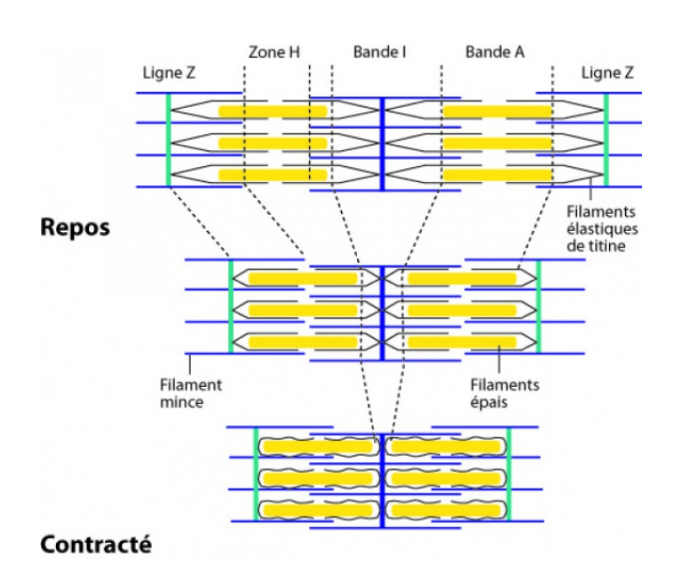
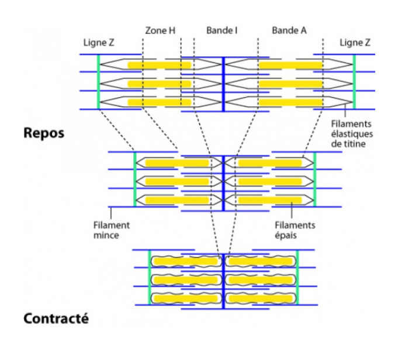

Anatomie : Quels muscles sont utilisés en cyclisme ?
Lorsque l’on fait du vélo, les muscles sont utilisé et fatigue au bout d’un moment. Comme certains sont plus utilisé que d’autre, nous nous sommes donc posé deux questions : Quel sont les différents muscles utilisé lors de la pratique du vélo ? Sont-ils tout le temps les mêmes, ou bien change t-il suivant la cadence ?
Lorsque l’on pratique le cyclisme, il y a une utilisation majeur des muscles de membres inférieurs. Les muscles concernés par le pédalage sont les muscles entraînant l’extension et de la flexion de la cuisse c’est à dire le quadriceps et les ischio jambiers, les muscles de la patte d’oie et le biceps crural. Les muscles abdominaux et les muscles du membre supérieur, sont globalement moins sollicités mais lors des sprint, ou des ascensions,les muscles de membres supérieur et Pectoraux, interviennent.
Mais il est important de noter que les fibres musculaires sollicitées par le vélo sont différentes en fonction du type de pratique :
- Le coureur cycliste classique qui court contre la montre (distance définie avec temps chronométré) a des fibres musculaires de type endurance. C’est à dire que ses muscles restent de taille normale car ses fibres travaillent à une fréquence de pédalage normale et mettent du temps à donner leur puissance maximale.
- Le coureur cycliste sur piste (doit faire un nombre de tour défini) a des fibres musculaires dites de vitesse qui lui permettent d’accélérer très rapidement et de développer une énergie très importante dans un minimum de temps. Ces fibres sont celles retrouvées chez les sprinters. Les muscles sont de taille importante et sont capables de déployer une puissance importante en un temps rapide : c’est ce que l’on appelle la vélocité.
On peut nous se poser la question : sur quel type de coureur cycliste voulons nous nous baser ?
Etudions plus précisément l’action des muscles inférieur lors du pédalage.
Phase 1 : La poussée
Au cours de la première phase, le pied est en phase descendante provoquant d’abord l’extension de la cuisse puis celle de la jambe. Muscles nécessaires : muscles extenseur du genou :
- Quadriceps : Les 4 muscles composants le quadriceps
- Fessiers : petit, moyen, grand
Phase 2 : Le point mort bas
Au cours de la seconde phase, on a une flexion de jambe, une extension du pied, ainsi qu'une élévation du genou. Muscles nécessaires : muscles flechisseur du genou :
- Ischio-Jambiers : semi-tendineux, demi-membraneux, biceps crural.
- Mollet : tricep sural (soléaire et gastrocnémiens)

Phase 3 : L'élévation
Au cours de la troisième phase,l'effort est globalement passif, mais on peut avoir flexion de la cuisse et de la jambe. Muscles nécessaires : muscles flechisseur du genou :
- Ischio-Jambiers : semi-tendineux, demi-membraneux, biceps crural.
- Mollet : tricep sural (soléaire et gastrocnémiens)
Phase 4 : Le point mort haut
Reprise de la poussée vers l’avant. Extension de la jambe et du pied initiée par les muscles antérieur de la jambe. Muscle utilisé : Muscle extenseur du genou :
- Jambier antérieur
- Hanche : illiaque, tenseur fascia-lata, psoas
- Cuisse : couturier
- Mollet : tricep sural
Le fonctionnement des muscles à l'echelle cellulaire
Après avoir étudié l'action des muscles en fonction du mouvement effuectué, on peut maintenant s'interesser à la constitution d'un muscle pour mieux comprendre son fonctionnement dans sa globalitée.
Un muscle est constitué de tissus musculaire et de tissus conjonctifs (vaisseaux sanguin et nerf). Les tissus musculaire sont des faisceaux musculaires, ses faisceaux sont eux, constitué de plusieurs fibre musculaires. Les fibres musculaires correspondent aux cellules du muscles.
Dans ces cellules, il y a ce que l’on appelle des myofibrilles qui sont des complexe de filaments protéiques qui s’assemble pour former des sarcomères. Lors d’une contraction (augmentation du potentiels d’action), les filaments mince (actine) et épais (myosine) des sarcomères se chevauchent.
 
